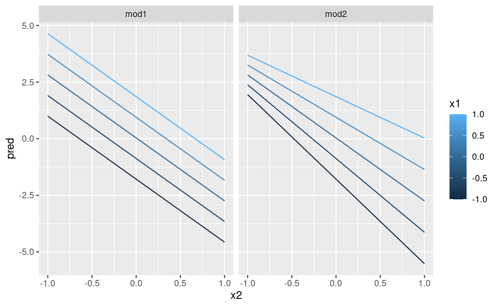

23 Modelli base
23.1 Introduzione
L’obiettivo di un modello è quello di fornire un semplice riassunto a bassa dimesionalità di un set di dati. Nel contesto di questo libro useremo i modelli per dividere i dati in modelli e residui. I modelli forti nasconderanno tendenze più sottili, quindi useremo i modelli per aiutarci a rimuovere i livelli di struttura mentre esploriamo un set di dati.
Tuttavia, prima di iniziare a usare i modelli su serie di dati interessanti e reali, è necessario comprendere le basi del funzionamento dei modelli. Per questo motivo, questo capitolo del libro è unico perché utilizza solo set di dati simulati. Questi set di dati sono molto semplici, e per niente interessanti, ma vi aiuteranno a capire l’essenza della modellazione prima di applicare le stesse tecniche ai dati reali nel prossimo capitolo.
Ci sono due parti in un modello:
Primo, si definisce una famiglia di modelli che esprimono un modello preciso, ma modello preciso, ma generico, che si vuole catturare. Per esempio, il modello potrebbe essere una linea retta o una curva quadratica. Esprimerai la famiglia di modelli come un’equazione come
y = a_1 * x + a_2oy = a_1 * x ^ a_2. Qui,xeysono variabili conosciute dai tuoi dati, ea_1ea_2sono parametri che possono variare per catturare modelli diversi.Poi, si genera un modello adattato trovando il modello dalla famiglia che si avvicina di più ai vostri dati. Questo prende il modello generico generico e lo rende specifico, come
y = 3 * x + 7oy = 9 * x ^ 2.
È importante capire che un modello adattato è solo il modello più vicino da una famiglia di modelli. Questo implica che si ha il modello “migliore” (secondo alcuni criteri); non implica che si abbia un buon modello e certamente non implica che il modello sia “vero”. George Box lo dice bene nel suo famoso aforisma:
Tutti i modelli sono sbagliati, ma alcuni sono utili.
Vale la pena leggere il contesto più completo della citazione:
Ora sarebbe davvero notevole se qualsiasi sistema esistente nel mondo reale potesse essere rappresentato esattamente da un qualsiasi modello semplice. Tuttavia, modelli astutamente scelti modelli parsimoniosi spesso forniscono approssimazioni notevolmente utili. Per esempio, la legge PV = RT che mette in relazione pressione P, volume V e temperatura T di un gas “ideale” attraverso una costante R non è esattamente vera per qualsiasi gas reale, ma spesso fornisce un’approssimazione utile e inoltre la sua struttura è informativa poiché scaturisce da una visione fisica del comportamento delle molecole di gas molecole di gas.
Per un tale modello non c’è bisogno di porre la domanda “Il modello è vero? Se la”verità" deve essere “tutta la verità”, la risposta deve essere “No”. L’unica domanda di interesse è “Il modello è illuminante e utile?”.
L’obiettivo di un modello non è quello di scoprire la verità, ma di scoprire una semplice approssimazione che sia ancora utile.
23.2 Un modello semplice
Diamo un’occhiata al dataset simulato sim1, incluso nel pacchetto modelr. Contiene due variabili continue, x e y. Tracciamo il loro grafico per vedere come sono correlati:
ggplot(sim1, aes(x, y)) +
geom_point()Si può vedere un forte modello nei dati. Usiamo un modello per catturare quel modello e renderlo esplicito. È nostro compito fornire la forma base del modello. In questo caso, la relazione sembra lineare, cioè y = a_0 + a_1 * x. Cominciamo a farci un’idea di come sono i modelli di questa famiglia generandone alcuni a caso e sovrapponendoli ai dati. Per questo semplice caso, possiamo usare geom_abline() che prende una pendenza e un’intercetta come parametri. Più avanti impareremo tecniche più generali che funzionano con qualsiasi modello.
models <- tibble(
a1 = runif(250, -20, 40),
a2 = runif(250, -5, 5)
)
ggplot(sim1, aes(x, y)) +
geom_abline(aes(intercept = a1, slope = a2), data = models, alpha = 1/4) +
geom_point() Ci sono 250 modelli su questo grafico, ma molti sono davvero pessimi! Dobbiamo trovare i buoni modelli rendendo precisa la nostra intuizione che un buon modello è “vicino” ai dati. Abbiamo bisogno di un modo per quantificare la distanza tra i dati e un modello. Poi possiamo adattare il modello trovando il valore di a_0 e a_1 che genera il modello con la minore distanza dai dati.
Un facile punto di partenza è trovare la distanza verticale tra ogni punto e il modello, come nel seguente diagramma. (Nota che ho spostato leggermente i valori x in modo che tu possa vedere le singole distanze).
Questa distanza è semplicemente la differenza tra il valore y dato dal modello (la predizione) e il valore y reale nei dati (la risposta).
Per calcolare questa distanza, prima trasformiamo la nostra famiglia di modelli in una funzione R. Questa prende i parametri del modello e i dati come input, e dà come output i valori predetti dal modello:
model1 <- function(a, data) {
a[1] + data$x * a[2]
}
model1(c(7, 1.5), sim1)
#> [1] 8.5 8.5 8.5 10.0 10.0 10.0 11.5 11.5 11.5 13.0 13.0 13.0 14.5 14.5 14.5
#> [16] 16.0 16.0 16.0 17.5 17.5 17.5 19.0 19.0 19.0 20.5 20.5 20.5 22.0 22.0 22.0Poi, abbiamo bisogno di un modo per calcolare una distanza complessiva tra i valori previsti e quelli reali. In altre parole, il grafico sopra mostra 30 distanze: come facciamo a farle collassare in un singolo numero?
Un modo comune per farlo in statistica è usare la “deviazione media della radice quadrata”. Si calcola la differenza tra il reale e il previsto, si eleva al quadrato, si fa la media e si prende la radice quadrata. Questa distanza ha un sacco di interessanti proprietà matematiche, di cui non parleremo qui. Dovrete fidarvi della mia parola!
measure_distance <- function(mod, data) {
diff <- data$y - model1(mod, data)
sqrt(mean(diff ^ 2))
}
measure_distance(c(7, 1.5), sim1)
#> [1] 2.665212Ora possiamo usare purrr per calcolare la distanza per tutti i modelli definiti sopra. Abbiamo bisogno di una funzione di aiuto perché la nostra funzione di distanza si aspetta il modello come un vettore numerico di lunghezza 2.
sim1_dist <- function(a1, a2) {
measure_distance(c(a1, a2), sim1)
}
models <- models %>%
mutate(dist = purrr::map2_dbl(a1, a2, sim1_dist))
models
#> # A tibble: 250 × 3
#> a1 a2 dist
#> <dbl> <dbl> <dbl>
#> 1 -15.2 0.0889 30.8
#> 2 30.1 -0.827 13.2
#> 3 16.0 2.27 13.2
#> 4 -10.6 1.38 18.7
#> 5 -19.6 -1.04 41.8
#> 6 7.98 4.59 19.3
#> # … with 244 more rowsPoi, sovrapponiamo i 10 migliori modelli ai dati. Ho colorato i modelli per -dist: questo è un modo semplice per assicurarsi che i modelli migliori (cioè quelli con la distanza minore) abbiano i colori più brillanti.
ggplot(sim1, aes(x, y)) +
geom_point(size = 2, colour = "grey30") +
geom_abline(
aes(intercept = a1, slope = a2, colour = -dist),
data = filter(models, rank(dist) <= 10)
)Possiamo anche pensare a questi modelli come a delle osservazioni, e visualizzarli con uno scatterplot di a1 vs a2, sempre colorato da -dist. Non possiamo più vedere direttamente come il modello si confronta con i dati, ma possiamo vedere molti modelli contemporaneamente. Di nuovo, ho evidenziato i 10 modelli migliori, questa volta disegnando dei cerchi rossi sotto di essi.
ggplot(models, aes(a1, a2)) +
geom_point(data = filter(models, rank(dist) <= 10), size = 4, colour = "red") +
geom_point(aes(colour = -dist))Invece di provare molti modelli casuali, potremmo essere più sistematici e generare una griglia di punti uniformemente distanziati (questa è chiamata ricerca a griglia). Ho scelto i parametri della griglia in modo approssimativo guardando dove si trovavano i migliori modelli nel grafico sopra.
grid <- expand.grid(
a1 = seq(-5, 20, length = 25),
a2 = seq(1, 3, length = 25)
) %>%
mutate(dist = purrr::map2_dbl(a1, a2, sim1_dist))
grid %>%
ggplot(aes(a1, a2)) +
geom_point(data = filter(grid, rank(dist) <= 10), size = 4, colour = "red") +
geom_point(aes(colour = -dist)) Quando si sovrappongono i migliori 10 modelli ai dati originali, tutti sembrano abbastanza buoni:
ggplot(sim1, aes(x, y)) +
geom_point(size = 2, colour = "grey30") +
geom_abline(
aes(intercept = a1, slope = a2, colour = -dist),
data = filter(grid, rank(dist) <= 10)
)Si potrebbe immaginare di rendere iterativamente la griglia sempre più fine fino a restringere il modello migliore. Ma c’è un modo migliore per affrontare questo problema: uno strumento di minimizzazione numerica chiamato ricerca Newton-Raphson. L’intuizione di Newton-Raphson è piuttosto semplice: si sceglie un punto di partenza e si cerca il pendio più ripido. Poi si scia giù per quel pendio un po’, e poi si ripete ancora e ancora, finché non si può scendere più in basso. In R, possiamo farlo con optim():
best <- optim(c(0, 0), measure_distance, data = sim1)
best$par
#> [1] 4.222248 2.051204
ggplot(sim1, aes(x, y)) +
geom_point(size = 2, colour = "grey30") +
geom_abline(intercept = best$par[1], slope = best$par[2])Non preoccupatevi troppo dei dettagli di come funziona optim(). È l’intuizione che è importante qui. Se avete una funzione che definisce la distanza tra un modello e un set di dati, un algoritmo che può minimizzare tale distanza modificando i parametri del modello, potete trovare il modello migliore. La cosa bella di questo approccio è che funzionerà per qualsiasi famiglia di modelli per cui è possibile scrivere un’equazione.
C’è un altro approccio che possiamo usare per questo modello, perché è un caso speciale di una famiglia più ampia: i modelli lineari. Un modello lineare ha la forma generale y = a_1 + a_2 * x_1 + a_3 * x_2 + ... + a_n * x_(n - 1). Quindi questo semplice modello è equivalente a un modello lineare generale dove n è 2 e x_1 è x. R ha uno strumento specificamente progettato per l’adattamento di modelli lineari chiamato lm(). lm() ha un modo speciale per specificare la famiglia di modelli: le formule. Le formule assomigliano a y ~ x, che lm() tradurrà in una funzione come y = a_1 + a_2 * x. Possiamo adattare il modello e guardare l’output:
Questi sono esattamente gli stessi valori che abbiamo ottenuto con optim()! Dietro le quinte lm() non usa optim() ma sfrutta invece la struttura matematica dei modelli lineari. Usando alcune connessioni tra geometria, calcolo e algebra lineare, lm() trova effettivamente il modello più vicino in un solo passo, usando un algoritmo sofisticato. Questo approccio è più veloce e garantisce che ci sia un minimo globale.
23.2.1 Esercizi
-
Uno svantaggio del modello lineare è che è sensibile a valori insoliti perché la distanza incorpora un termine quadratico. Adattate un modello lineare ai dati simulati qui sotto e visualizzate i risultati. Esegui un paio di volte per generare diversi set di dati simulati. Cosa notate del modello?
-
Un modo per rendere i modelli lineari più robusti è usare una misura di distanza diversa. Per esempio, invece della distanza radice-media quadrata, si potrebbe usare la distanza media-assoluta:
Usate
optim()per adattare questo modello ai dati simulati sopra e confrontatelo con il modello lineare. -
Una sfida nell’eseguire l’ottimizzazione numerica è che è garantito di trovare solo un ottimo locale. Qual è il problema dell’ottimizzazione di un modello a tre parametri come questo?
model1 <- function(a, data) { a[1] + data$x * a[2] + a[3] }
23.3 Visualizzare i modelli
Per modelli semplici, come quello di cui sopra, è possibile capire quale modello cattura studiando attentamente la famiglia del modello e i coefficienti montati. E se si segue un corso di statistica sulla modellizzazione, è probabile che si passi molto tempo a fare proprio questo. Qui, tuttavia, prenderemo una strada diversa. Ci concentreremo sulla comprensione di un modello guardando le sue previsioni. Questo ha un grande vantaggio: ogni tipo di modello predittivo fa delle previsioni (altrimenti a cosa servirebbe?) quindi possiamo usare lo stesso set di tecniche per capire qualsiasi tipo di modello predittivo.
È anche utile vedere ciò che il modello non cattura, i cosiddetti residui che rimangono dopo aver sottratto le previsioni dai dati. I residui sono potenti perché ci permettono di usare i modelli per rimuovere i modelli eclatanti in modo da poter studiare le tendenze più sottili che rimangono.
23.3.1 Previsioni
Per visualizzare le previsioni di un modello, iniziamo generando una griglia di valori uniformemente distanziati che copra la regione in cui si trovano i nostri dati. Il modo più semplice per farlo è usare modelr::data_grid(). Il suo primo argomento è un frame di dati, e per ogni argomento successivo trova le variabili uniche e poi genera tutte le combinazioni:
grid <- sim1 %>%
data_grid(x)
grid
#> # A tibble: 10 × 1
#> x
#> <int>
#> 1 1
#> 2 2
#> 3 3
#> 4 4
#> 5 5
#> 6 6
#> # … with 4 more rows(Questo diventerà più interessante quando inizieremo ad aggiungere più variabili al nostro modello).
Poi aggiungiamo le predizioni. Useremo modelr::add_predictions() che prende un data frame e un modello. Aggiunge le predizioni dal modello ad una nuova colonna nel data frame:
grid <- grid %>%
add_predictions(sim1_mod)
grid
#> # A tibble: 10 × 2
#> x pred
#> <int> <dbl>
#> 1 1 6.27
#> 2 2 8.32
#> 3 3 10.4
#> 4 4 12.4
#> 5 5 14.5
#> 6 6 16.5
#> # … with 4 more rows(Potete anche usare questa funzione per aggiungere previsioni al vostro set di dati originale).
Poi, tracciamo le previsioni. Potreste chiedervi tutto questo lavoro extra rispetto al semplice utilizzo di geom_abline(). Ma il vantaggio di questo approccio è che funzionerà con qualsiasi modello in R, dal più semplice al più complesso. Siete limitati solo dalle vostre capacità di visualizzazione. Per altre idee su come visualizzare tipi di modelli più complessi, potreste provare http://vita.had.co.nz/papers/model-vis.html.
23.3.2 Residui
Il rovescio della medaglia delle previsioni sono i residui. Le previsioni ti dicono il modello che il modello ha catturato, e i residui ti dicono cosa il modello ha mancato. I residui sono solo le distanze tra i valori osservati e quelli previsti che abbiamo calcolato sopra.
Aggiungiamo i residui ai dati con add_residuals(), che funziona come add_predictions(). Si noti, tuttavia, che usiamo il dataset originale, non una griglia costruita. Questo perché per calcolare i residui abbiamo bisogno dei valori reali di y.
sim1 <- sim1 %>%
add_residuals(sim1_mod)
sim1
#> # A tibble: 30 × 3
#> x y resid
#> <int> <dbl> <dbl>
#> 1 1 4.20 -2.07
#> 2 1 7.51 1.24
#> 3 1 2.13 -4.15
#> 4 2 8.99 0.665
#> 5 2 10.2 1.92
#> 6 2 11.3 2.97
#> # … with 24 more rowsCi sono alcuni modi diversi per capire cosa ci dicono i residui sul modello. Un modo è semplicemente disegnare un poligono di frequenza per aiutarci a capire la diffusione dei residui:
ggplot(sim1, aes(resid)) +
geom_freqpoly(binwidth = 0.5)Questo vi aiuta a calibrare la qualità del modello: quanto sono lontane le previsioni dai valori osservati? Notate che la media del residuo sarà sempre 0.
Spesso vorrete ricreare dei grafici usando i residui invece del predittore originale. Vedrete molto di questo nel prossimo capitolo.
ggplot(sim1, aes(x, resid)) +
geom_ref_line(h = 0) +
geom_point() Questo sembra un rumore casuale, suggerendo che il nostro modello ha fatto un buon lavoro nel catturare i modelli nel set di dati.
23.3.3 Esercizi
Invece di usare
lm()per adattare una linea retta, potete usareloess()per adattare una curva liscia. 2. Ripetete il processo di adattamento del modello, generazione della griglia, previsioni e visualizzazione susim1usandoloess()invece dilm(). Come si confronta il risultato congeom_smooth()?add_predictions()è abbinato agather_predictions()espread_predictions(). Come differiscono queste tre funzioni?Cosa fa
geom_ref_line()? Da quale pacchetto proviene? Perché la visualizzazione di una linea di riferimento nei grafici che mostrano i residui è utile e importante?-
Perché potreste voler guardare un poligono di frequenza dei residui assoluti?
- Quali sono i pro e i contro rispetto al guardare i residui grezzi?
23.4 Formule e famiglie di modelli
Avete già visto le formule quando usate facet_wrap() e facet_grid(). In R, le formule forniscono un modo generale per ottenere un “comportamento speciale”. Piuttosto che valutare subito i valori delle variabili, li catturano in modo che possano essere interpretati dalla funzione.
La maggior parte delle funzioni di modellazione in R usa una conversione standard da formule a funzioni. Avete già visto una semplice conversione: y ~ x viene tradotto in y = a_1 + a_2 * x. Se volete vedere cosa fa effettivamente R, potete usare la funzione model_matrix(). Prende un data frame e una formula e restituisce una tibla che definisce l’equazione del modello: ogni colonna nell’output è associata a un coefficiente nel modello, la funzione è sempre y = a_1 * out1 + a_2 * out_2. Per il caso più semplice di y ~ x1 questo ci mostra qualcosa di interessante:
df <- tribble(
~y, ~x1, ~x2,
4, 2, 5,
5, 1, 6
)
model_matrix(df, y ~ x1)
#> # A tibble: 2 × 2
#> `(Intercept)` x1
#> <dbl> <dbl>
#> 1 1 2
#> 2 1 1Il modo in cui R aggiunge l’intercetta al modello è semplicemente avere una colonna piena di uno. Per impostazione predefinita, R aggiungerà sempre questa colonna. Se non volete, dovete eliminarla esplicitamente con -1:
model_matrix(df, y ~ x1 - 1)
#> # A tibble: 2 × 1
#> x1
#> <dbl>
#> 1 2
#> 2 1La matrice del modello cresce in modo non sorprendente quando si aggiungono più variabili al modello:
model_matrix(df, y ~ x1 + x2)
#> # A tibble: 2 × 3
#> `(Intercept)` x1 x2
#> <dbl> <dbl> <dbl>
#> 1 1 2 5
#> 2 1 1 6Questa notazione della formula è talvolta chiamata “notazione Wilkinson-Rogers”, ed è stata inizialmente descritta in Symbolic Description of Factorial Models for Analysis of Variance, di G. N. Wilkinson e C. E. Rogers https://www.jstor.org/stable/2346786. Vale la pena scavare e leggere l’articolo originale se volete capire tutti i dettagli dell’algebra di modellazione.
Le sezioni seguenti spiegano come funziona questa notazione della formula per le variabili categoriche, le interazioni e la trasformazione.
23.4.1 Variabili categoriche
Generare una funzione da una formula è semplice quando il predittore è continuo, ma le cose diventano un po’ più complicate quando il predittore è categorico. Immaginate di avere una formula come y ~ sex, dove sex potrebbe essere maschio o femmina. Non ha senso convertirla in una formula come y = x_0 + x_1 * sex perché sex non è un numero - non si può moltiplicare! Invece quello che R fa è convertirlo in y = x_0 + x_1 * sex_male dove sex_male è uno se sex è maschio e zero altrimenti:
df <- tribble(
~ sex, ~ response,
"male", 1,
"female", 2,
"male", 1
)
model_matrix(df, response ~ sex)
#> # A tibble: 3 × 2
#> `(Intercept)` sexmale
#> <dbl> <dbl>
#> 1 1 1
#> 2 1 0
#> 3 1 1Potresti chiederti perché R non crea anche una colonna sexfemale. Il problema è che creerebbe una colonna che è perfettamente prevedibile in base alle altre colonne (cioè sexfemale = 1 - sexmale). Sfortunatamente i dettagli esatti del perché questo è un problema vanno oltre lo scopo di questo libro, ma fondamentalmente crea una famiglia di modelli che è troppo flessibile, e avrà infiniti modelli che sono ugualmente vicini ai dati.
Fortunatamente, però, se ci si concentra sulla visualizzazione delle previsioni non è necessario preoccuparsi della parametrizzazione esatta. Guardiamo alcuni dati e modelli per renderlo concreto. Ecco il dataset sim2 di modelr:
ggplot(sim2) +
geom_point(aes(x, y))Possiamo adattarvi un modello e generare delle previsioni:
mod2 <- lm(y ~ x, data = sim2)
grid <- sim2 %>%
data_grid(x) %>%
add_predictions(mod2)
grid
#> # A tibble: 4 × 2
#> x pred
#> <chr> <dbl>
#> 1 a 1.15
#> 2 b 8.12
#> 3 c 6.13
#> 4 d 1.91In effetti, un modello con un x categorico predirà il valore medio per ogni categoria. (Perché? Perché la media minimizza la distanza radice-media-quadrata.) Questo è facile da vedere se sovrapponiamo le previsioni ai dati originali:
ggplot(sim2, aes(x)) +
geom_point(aes(y = y)) +
geom_point(data = grid, aes(y = pred), colour = "red", size = 4)Non puoi fare previsioni su livelli che non hai osservato. A volte lo si fa per caso, quindi è bene riconoscere questo messaggio di errore:
tibble(x = "e") %>%
add_predictions(mod2)
#> Error in model.frame.default(Terms, newdata, na.action = na.action, xlev = object$xlevels): factor x has new level e23.4.2 Interazioni (continue e categoriche)
Cosa succede quando combini una variabile continua e una categorica? sim3 contiene un predittore categorico e un predittore continuo. Possiamo visualizzarlo con un semplice grafico:
ggplot(sim3, aes(x1, y)) +
geom_point(aes(colour = x2))Ci sono due possibili modelli da adattare a questi dati:
Quando si aggiungono variabili con +, il modello stima ogni effetto indipendente da tutti gli altri. È possibile adattare la cosiddetta interazione usando *. Per esempio, y ~ x1 * x2 si traduce in y = a_0 + a_1 * x1 + a_2 * x2 + a_12 * x1 * x2. Nota che ogni volta che usi *, sia l’interazione che le singole componenti sono incluse nel modello.
Per visualizzare questi modelli abbiamo bisogno di due nuovi trucchi:
Abbiamo due predittori, quindi dobbiamo dare a
data_grid()entrambe le variabili. Trova tutti i valori unici dix1ex2e poi genera tutte le combinazioni.Per generare previsioni da entrambi i modelli simultaneamente, possiamo usare
gather_predictions()che aggiunge ogni previsione come una riga. Il complemento digather_predictions()èspread_predictions()che aggiunge ogni previsione in una nuova colonna.
Insieme questo ci dà:
grid <- sim3 %>%
data_grid(x1, x2) %>%
gather_predictions(mod1, mod2)
grid
#> # A tibble: 80 × 4
#> model x1 x2 pred
#> <chr> <int> <fct> <dbl>
#> 1 mod1 1 a 1.67
#> 2 mod1 1 b 4.56
#> 3 mod1 1 c 6.48
#> 4 mod1 1 d 4.03
#> 5 mod1 2 a 1.48
#> 6 mod1 2 b 4.37
#> # … with 74 more rowsPossiamo visualizzare i risultati di entrambi i modelli su un unico grafico usando il facetting:
ggplot(sim3, aes(x1, y, colour = x2)) +
geom_point() +
geom_line(data = grid, aes(y = pred)) +
facet_wrap(~ model)Nota che il modello che usa + ha la stessa pendenza per ogni linea, ma intercette diverse. Il modello che usa * ha una pendenza e un’intercetta diverse per ogni linea.
Quale modello è migliore per questi dati? Possiamo dare un’occhiata ai residui. Qui ho sfaccettato sia il modello che x2 perché rende più facile vedere il modello all’interno di ogni gruppo.
sim3 <- sim3 %>%
gather_residuals(mod1, mod2)
ggplot(sim3, aes(x1, resid, colour = x2)) +
geom_point() +
facet_grid(model ~ x2)C’è un modello poco evidente nei residui per il mod2. I residui per il mod1 mostrano che il modello ha chiaramente mancato qualche modello in b, e meno, ma ancora presente è il modello in c, e d. Ci si potrebbe chiedere se c’è un modo preciso per dire quale di mod1 o mod2 sia migliore. C’è, ma richiede un sacco di background matematico, e a noi non interessa molto. Qui, ci interessa una valutazione qualitativa del fatto che il modello abbia catturato o meno il modello che ci interessa.
23.4.3 Interazioni (due continue)
Diamo un’occhiata al modello equivalente per due variabili continue. Inizialmente le cose procedono in modo quasi identico all’esempio precedente:
mod1 <- lm(y ~ x1 + x2, data = sim4)
mod2 <- lm(y ~ x1 * x2, data = sim4)
grid <- sim4 %>%
data_grid(
x1 = seq_range(x1, 5),
x2 = seq_range(x2, 5)
) %>%
gather_predictions(mod1, mod2)
grid
#> # A tibble: 50 × 4
#> model x1 x2 pred
#> <chr> <dbl> <dbl> <dbl>
#> 1 mod1 -1 -1 0.996
#> 2 mod1 -1 -0.5 -0.395
#> 3 mod1 -1 0 -1.79
#> 4 mod1 -1 0.5 -3.18
#> 5 mod1 -1 1 -4.57
#> 6 mod1 -0.5 -1 1.91
#> # … with 44 more rowsNotate il mio uso di seq_range() dentro data_grid(). Invece di usare ogni valore unico di x, userò una griglia regolarmente distanziata di cinque valori tra i numeri minimo e massimo. Probabilmente non è super importante in questo caso, ma è una tecnica utile in generale. Ci sono altri due utili argomenti a seq_range():
-
pretty = TRUEgenererà una sequenza “carina”, cioè qualcosa che sembra piacevole all’occhio umano. Questo è utile se volete produrre tabelle di output: -
trim = 0.1taglierà via il 10% dei valori della coda. Questo è utile se le variabili hanno una distribuzione a coda lunga e ci si vuole concentrare sulla generazione di valori vicino al centro:x1 <- rcauchy(100) seq_range(x1, n = 5) #> [1] -115.86934 -83.52130 -51.17325 -18.82520 13.52284 seq_range(x1, n = 5, trim = 0.10) #> [1] -13.841101 -8.709812 -3.578522 1.552767 6.684057 seq_range(x1, n = 5, trim = 0.25) #> [1] -2.17345439 -1.05938856 0.05467728 1.16874312 2.28280896 seq_range(x1, n = 5, trim = 0.50) #> [1] -0.7249565 -0.2677888 0.1893788 0.6465465 1.1037141 -
expand = 0.1è in un certo senso l’opposto ditrim(), espande l’intervallo del 10%.
Ora proviamo a visualizzare questo modello. Abbiamo due predittori continui, quindi potete immaginare il modello come una superficie 3d. Potremmo visualizzarlo usando geom_tile():
ggplot(grid, aes(x1, x2)) +
geom_tile(aes(fill = pred)) +
facet_wrap(~ model)Questo non suggerisce che i modelli siano molto diversi! Ma questa è in parte un’illusione: i nostri occhi e il nostro cervello non sono molto bravi a confrontare accuratamente le sfumature di colore. Invece di guardare la superficie dall’alto, potremmo guardarla da entrambi i lati, mostrando più facce:
ggplot(grid, aes(x1, pred, colour = x2, group = x2)) +
geom_line() +
facet_wrap(~ model)
ggplot(grid, aes(x2, pred, colour = x1, group = x1)) +
geom_line() +
facet_wrap(~ model)
Questo vi mostra che l’interazione tra due variabili continue funziona fondamentalmente allo stesso modo di una variabile categorica e continua. Un’interazione dice che non c’è un offset fisso: devi considerare entrambi i valori di x1 e x2 simultaneamente per prevedere y.
Puoi vedere che anche con solo due variabili continue, è difficile ottenere una buona visualizzazione. Ma questo è ragionevole: non ci si dovrebbe aspettare che sia facile capire come tre o più variabili interagiscono simultaneamente! Ma di nuovo, ci salviamo un po’ perché stiamo usando i modelli per l’esplorazione, e potete costruire gradualmente il vostro modello nel tempo. Il modello non deve essere perfetto, deve solo aiutarvi a rivelare un po’ di più sui vostri dati.
Ho passato un po’ di tempo a guardare i residui per vedere se potevo capire se il mod2 ha fatto meglio del mod1. Penso che lo faccia, ma è piuttosto sottile. Avrai la possibilità di lavorarci negli esercizi.
23.4.4 Trasformazioni
Puoi anche eseguire trasformazioni all’interno della formula del modello. Per esempio, log(y) ~ sqrt(x1) + x2 si trasforma in log(y) = a_1 + a_2 * sqrt(x1) + a_3 * x2. Se la vostra trasformazione coinvolge +, *, ^, o -, dovrete avvolgerla in I() in modo che R non la tratti come parte della specifica del modello. Per esempio, y ~ x + I(x ^ 2) viene tradotto in y = a_1 + a_2 * x + a_3 * x^2. Se dimenticate il I() e specificate y ~ x ^ 2 + x, R calcolerà y ~ x * x + x. x * x significa l’interazione di x con se stesso, che è la stessa di x. R elimina automaticamente le variabili ridondanti così x + x diventa x, il che significa che y ~ x ^ 2 + x specifica la funzione y = a_1 + a_2 * x. Probabilmente non è quello che intendevi!
Di nuovo, se sei confuso su ciò che il tuo modello sta facendo, puoi sempre usare model_matrix() per vedere esattamente quale equazione lm() si adatta:
df <- tribble(
~y, ~x,
1, 1,
2, 2,
3, 3
)
model_matrix(df, y ~ x^2 + x)
#> # A tibble: 3 × 2
#> `(Intercept)` x
#> <dbl> <dbl>
#> 1 1 1
#> 2 1 2
#> 3 1 3
model_matrix(df, y ~ I(x^2) + x)
#> # A tibble: 3 × 3
#> `(Intercept)` `I(x^2)` x
#> <dbl> <dbl> <dbl>
#> 1 1 1 1
#> 2 1 4 2
#> 3 1 9 3Le trasformazioni sono utili perché puoi usarle per approssimare funzioni non lineari. Se hai seguito un corso di calcolo, potresti aver sentito parlare del teorema di Taylor che dice che puoi approssimare qualsiasi funzione liscia con una somma infinita di polinomi. Ciò significa che puoi usare una funzione polinomiale per avvicinarti arbitrariamente a una funzione liscia adattando un’equazione come y = a_1 + a_2 * x + a_3 * x^2 + a_4 * x ^ 3. Scrivere questa sequenza a mano è noioso, così R fornisce una funzione di aiuto: poly():
model_matrix(df, y ~ poly(x, 2))
#> # A tibble: 3 × 3
#> `(Intercept)` `poly(x, 2)1` `poly(x, 2)2`
#> <dbl> <dbl> <dbl>
#> 1 1 -7.07e- 1 0.408
#> 2 1 -7.85e-17 -0.816
#> 3 1 7.07e- 1 0.408Tuttavia c’è un grosso problema nell’uso di poly(): al di fuori dell’intervallo dei dati, i polinomi sparano rapidamente all’infinito positivo o negativo. Un’alternativa più sicura è usare la spline naturale, splines::ns().
library(splines)
model_matrix(df, y ~ ns(x, 2))
#> # A tibble: 3 × 3
#> `(Intercept)` `ns(x, 2)1` `ns(x, 2)2`
#> <dbl> <dbl> <dbl>
#> 1 1 0 0
#> 2 1 0.566 -0.211
#> 3 1 0.344 0.771Vediamo come appare quando cerchiamo di approssimare una funzione non lineare:
sim5 <- tibble(
x = seq(0, 3.5 * pi, length = 50),
y = 4 * sin(x) + rnorm(length(x))
)
ggplot(sim5, aes(x, y)) +
geom_point()Ho intenzione di adattare cinque modelli a questi dati.
mod1 <- lm(y ~ ns(x, 1), data = sim5)
mod2 <- lm(y ~ ns(x, 2), data = sim5)
mod3 <- lm(y ~ ns(x, 3), data = sim5)
mod4 <- lm(y ~ ns(x, 4), data = sim5)
mod5 <- lm(y ~ ns(x, 5), data = sim5)
grid <- sim5 %>%
data_grid(x = seq_range(x, n = 50, expand = 0.1)) %>%
gather_predictions(mod1, mod2, mod3, mod4, mod5, .pred = "y")
ggplot(sim5, aes(x, y)) +
geom_point() +
geom_line(data = grid, colour = "red") +
facet_wrap(~ model)Notate che l’estrapolazione al di fuori dell’intervallo dei dati è chiaramente cattiva. Questo è il lato negativo di approssimare una funzione con un polinomio. Ma questo è un problema molto reale con ogni modello: il modello non può mai dirvi se il comportamento è vero quando iniziate ad estrapolare al di fuori dell’intervallo dei dati che avete visto. Dovete affidarvi alla teoria e alla scienza.
23.4.5 Esercizi
Cosa succede se ripetete l’analisi di
sim2usando un modello senza un’intercetta. Cosa succede all’equazione del modello? Cosa succede alle previsioni?Usate
model_matrix()per esplorare le equazioni generate per i modelli che ho adattato asim3esim4. Perché*è una buona abbreviazione di interazione?-
Usando i principi di base, convertite le formule dei seguenti due modelli in funzioni. (Suggerimento: iniziate a convertire la variabile categorica in variabili 0-1).
Per
sim4, quale tramod1emod2è meglio? Penso chemod2faccia un un lavoro leggermente migliore nella rimozione dei pattern, ma è piuttosto sottile. Puoi un grafico a sostegno della mia affermazione?
23.5 Valori mancanti
I valori mancanti ovviamente non possono trasmettere alcuna informazione sulla relazione tra le variabili, quindi le funzioni di modellazione eliminano tutte le righe che contengono valori mancanti. Il comportamento predefinito di R è di eliminarli silenziosamente, ma options(na.action = na.warn) (eseguito nei prerequisiti), fa in modo che tu riceva un avviso.
df <- tribble(
~x, ~y,
1, 2.2,
2, NA,
3, 3.5,
4, 8.3,
NA, 10
)
mod <- lm(y ~ x, data = df)
#> Warning: Dropping 2 rows with missing valuesPer sopprimere l’avvertimento, impostare na.action = na.exclude:
mod <- lm(y ~ x, data = df, na.action = na.exclude)Puoi sempre vedere esattamente quante osservazioni sono state usate con nobs():
nobs(mod)
#> [1] 323.6 Altre famiglie di modelli
Questo capitolo si è concentrato esclusivamente sulla classe dei modelli lineari, che assumono una relazione della forma y = a_1 * x1 + a_2 * x2 + ... + a_n * xn. I modelli lineari assumono inoltre che i residui abbiano una distribuzione normale, di cui non abbiamo parlato. Esiste un vasto insieme di classi di modelli che estendono il modello lineare in vari modi interessanti. Alcuni di essi sono:
Modelli lineari generalizzati, ad esempio
stats::glm(). I modelli lineari assumono che la risposta sia continua e l’errore abbia una distribuzione normale. I modelli lineari generalizzati estendono i modelli lineari per includere risposte non continue risposte non continue (per esempio dati binari o conteggi). Funzionano definendo una distanza basata sull’idea statistica di verosimiglianza.Modelli additivi generalizzati, ad esempio
mgcv::gam(), estendono i modelli lineari generalizzati modelli lineari generalizzati per incorporare funzioni lisce arbitrarie. Ciò significa che è possibile scrivere una formula comey ~ s(x)che diventa un’equazione come y = f(x)e lasciare chegam()` stimi quale sia questa funzione (soggetta ad alcuni vincoli di scorrevolezza per rendere il problema trattabile).Modelli lineari penalizzati, per esempio
glmnet::glmnet(), aggiungono un termine di penalità alla la distanza che penalizza i modelli complessi (definiti dalla distanza tra il vettore dei parametri e l’origine). Questo tende a rendere modelli che generalizzano meglio a nuovi insiemi di dati della stessa popolazione.Modelli lineari robusti, ad esempio
MASS::rlm(), modificano la distanza per ponderare punti che sono molto lontani. Questo li rende meno sensibili alla presenza di outlier, al costo di non essere altrettanto buoni quando non ci sono valori anomali.Alberi decisionali, per esempio
rpart::rpart(), attaccano il problema in un modo completamente diverso modo completamente diverso dai modelli lineari. Si adattano ad un modello costante frammentario, dividendo i dati in pezzi progressivamente sempre più piccoli. Gli alberi non sono terribilmente efficaci da soli, ma sono molto potenti se usati in aggregato da modelli come random forests (ad esempiorandomForest::randomForest()) o gradient boosting machines (ad esempioxgboost::xgboost).
Questi modelli funzionano tutti in modo simile dal punto di vista della programmazione. Una volta che avete padroneggiato i modelli lineari, dovreste trovare facile padroneggiare la meccanica di queste altre classi di modelli. Essere un abile modellatore è un misto di alcuni buoni principi generali e di avere una grande cassetta degli attrezzi di tecniche. Ora che avete imparato alcuni strumenti generali e una classe utile di modelli, potete andare avanti e imparare altre classi da altre fonti.